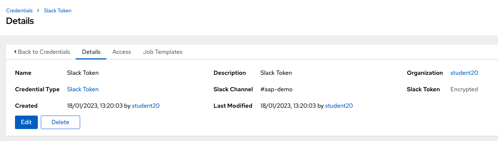

Notifications If everything worked as expected it is time to notify other teams so they can update their deployments and take advantage of the new features or fixed errors. In this laboratory we’re going to use Slack. Visit User Configuration section to configure your username if you haven’t set it up yet! Take a look at 3. Testing Environment > Run Workflow Manually to review how to test the Workflow manually. User Configuration As part of this laboratory setup there should be a credential already configured in AAP > Resources > Credentials > Slack Token.  This credential is exposing the following environment variables in the job template [JT] Notify New Release: Slack token: SLACK_TOKEN Slack channel: SLACK_CHANNEL All user will be using the same Slack channel (#rhte-lab) and token so please do not modify these values. Send Notification In this section we’re going to configure the last task or playbook so we send a notification with some basic information. Of course that information could be extended with other information like a git release link, description of the changes, jira tickets, nexus url, aap url,… The first thing we have to do is save the new chart version as a variable so we can read it in the notify-new-release task. Steps Solution Go to Gitea and open helm-ansible-pipeline repository. Open the playbook 05-helm-package-nexus.yml and edit it. Add a new task to store the chart version as a variable named new_version. Commit your changes. Use the collection ansible.builtin.set_stats to create the variable. To get the chart version take a look at a task named Load Chart information in that same playbook. Go to Gitea and open helm-ansible-pipeline repository. Open the playbook 05-helm-package-nexus.yml and edit it. Add a new task to store the chart version as a variable named new_version: - name: "Populate New Base Chart version {{ version }}" ansible.builtin.set_stats: data: new_version: "{{ version }}" The playbook should look like this: --- - name: Helm Package Nexus hosts: all gather_facts: false tasks: - name: Debug ansible.builtin.debug: msg: Helm Package - name: Clone Base Chart remote repository ansible.builtin.git: repo: http://gitea.app-lifecycle-lab.svc:3000/%USER%/base-chart.git dest: /tmp/base-chart version: master - name: Package Helm test scenario ansible.builtin.shell: helm package chart args: chdir: /tmp/base-chart - name: Load Chart information ansible.builtin.include_vars: file: /tmp/base-chart/chart/Chart.yaml - name: Nexus Credentials ansible.builtin.set_fact: nexus_credentials: "%USER%:%USER%" - name: Upload Helm Base Chart package to Nexus ansible.builtin.shell: | curl -X 'POST' \ 'http://{{ nexus_credentials }}@nexus.app-lifecycle-lab.svc:8081/service/rest/v1/components?repository=%USER%' \ -H 'accept: application/json' \ -H 'Content-Type: multipart/form-data' \ -F 'helm.asset=@base-chart-{{ version }}.tgz;type=application/gzip' args: chdir: /tmp/base-chart - name: "Populate New Base Chart version {{ version }}" ansible.builtin.set_stats: data: new_version: "{{ version }}" Commit your changes. Now that the new version is saved as a variable in our Workflow we can send a notification on each new release. Steps Solution Go to Gitea and open helm-ansible-pipeline repository. Open the playbook 06-notify-new-release.yml and edit it. Add a new task to send a notification to Slack with: token: "{{ lookup('env','SLACK_TOKEN') }}". msg: the value of the variable new_version and your username. channel: "{{ lookup('env','SLACK_CHANNEL') }}". Configure the rest as you consider. Commit your changes. Use the collection community.general.slack to send the notification. Go to Gitea and open helm-ansible-pipeline repository. Open the playbook 06-notify-new-release.yml and edit it. Add a new task to send a notification to Slack: --- - name: Notify New Base Chart version hosts: all gather_facts: false tasks: - name: Debug ansible.builtin.debug: msg: Notify New Base Chart version - name: Send New Base Chart version Slack notification community.general.slack: token: "{{ lookup('env','SLACK_TOKEN') }}" msg: | ### Base Chart Pipeline ### -------------------------------------- `Status`: Success. `New Base Chart Version`: {{ new_version }} `Sent by`: %USER% -------------------------------------- channel: "{{ lookup('env','SLACK_CHANNEL') }}" color: good username: "Ansible on {{ inventory_hostname }}" link_names: 0 parse: 'none' Commit your changes. 4. Validations 6. Challenges